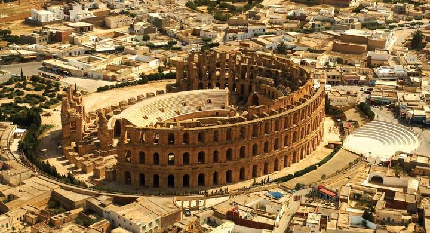

Mahdia est une ville côtière tunisienne située au centre-est du pays, à environ 200 kilomètres au sud de la capitale Tunis. Chef-lieu du gouvernorat du même nom, elle constitue une municipalité comptant 51 833 habitants en 20142.
Construite à l'origine sur une presqu'île de 1 400 mètres de longueur sur 500 mètres de largeur, elle abrite l'un des premiers ports de pêche du pays. L'activité touristique pèse de plus en plus dans l'économie locale. La cité est un centre tertiaire qui a développé peu à peu un pôle d'enseignement supérieur, notamment avec l'établissement de l'Institut d'économie et de gestion en 1999.

La Grande Mosquée de Mahdia
La Grande Mosquée de Mahdia (الجامع الكبير في المهدية) est une mosquée tunisienne située à Mahdia.
Située dans la partie sud de la péninsule sur laquelle se trouve la médina, la mosquée est construite en 916 (303-304 du calendrier musulman), après la fondation de la ville, à l'intérieur des murailles califales, sur une plate-forme artificielle « gagnée sur la mer » comme le mentionne le géographe andalou Al-Bakri1 (XIe siècle), à l'instar d'autres bâtiments situés à proximité et disparus depuis.

El Jem ou El Djem est une ville tunisienne située aux portes de la région du Sahel. Rattachée administrativement au gouvernorat de Mahdia, elle constitue une municipalité comptant 21 234 habitants en 2014. Fondée sur les ruines de la cité antique de Thysdrus ou Thysdritania colonia, elle est célèbre pour son amphithéâtre, le plus grand de l'Empire romain après le Colisée de Rome et celui de Capoue. Celui-ci accueille chaque été depuis 1985 le Festival international de musique symphonique d'El Jem. 